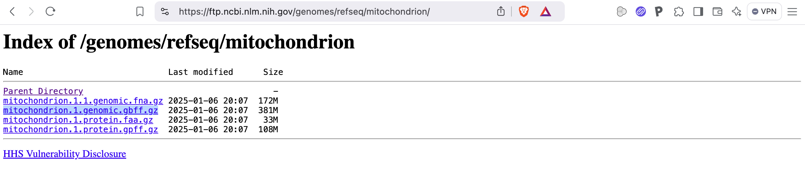

Designing new barcodes with ecoPrimers #
ecoPrimers
(
Citation: Riaz, Shehzad
& al., 2011
Riaz,
T.,
Shehzad,
W.,
Viari,
A.,
Pompanon,
F.,
Taberlet,
P. & Coissac,
E.
(2011).
ecoPrimers: inference of new DNA barcode markers from whole genome sequence analysis.
Nucleic acids research, 39(21). e145.
https://doi.org/10.1093/nar/gkr732
)
is a tool for designing new DNA metabarcodes.
It is capable of working with a collection of mitochondrial genomes, chloroplast genomes or rRNA nuclear gene clusters. It is an alignment free method, which guarantees its efficiency.
The
ecoPrimers program was developed to be used in conjunction with the original OBITools. Therefore, using it with the new OBITools4 requires some special care in data preparation.
In this recipe we will use
ecoPrimers to design a new bony fish DNA metabarcode.
Installation of
ecoPrimers
#
ecoPrimers is available from the git reposiroty of
metabarcoding site at
Installation can be done by cloning the project:
git clone https://git.metabarcoding.org/obitools/ecoprimers.git
This will create a new ecoprimers directory with a src subdirectory containing the source code.
You will need to change your current working directory to this ecoprimers/src directory.
cd ecoprimers/src
It is now possible to compile the ecoPrimers program using the make command:
make
This command will produce a series of messages on your screen similar to the following.
You may get some extra warning messages, but no errors should be reported.
If compilation is successful, an ecoPrimers executable will be created in the current directory.
gcc -DMAC_OS_X -M -o ecoprimer.d ecoprimer.c
gcc -DMAC_OS_X -W -Wall -m64 -g -c -o ecoprimer.o ecoprimer.c
/Library/Developer/CommandLineTools/usr/bin/make -C libecoPCR
gcc -DMAC_OS_X -M -o econame.d econame.c
gcc -DMAC_OS_X -M -o ecofilter.d ecofilter.c
gcc -DMAC_OS_X -M -o ecotax.d ecotax.c
gcc -DMAC_OS_X -M -o ecoseq.d ecoseq.c
gcc -DMAC_OS_X -M -o ecorank.d ecorank.c
gcc -DMAC_OS_X -M -o ecoMalloc.d ecoMalloc.c
gcc -DMAC_OS_X -M -o ecoIOUtils.d ecoIOUtils.c
gcc -DMAC_OS_X -M -o ecoError.d ecoError.c
gcc -DMAC_OS_X -M -o ecodna.d ecodna.c
gcc -DMAC_OS_X -W -Wall -m64 -g -c -o ecodna.o ecodna.c
gcc -DMAC_OS_X -W -Wall -m64 -g -c -o ecoError.o ecoError.c
gcc -DMAC_OS_X -W -Wall -m64 -g -c -o ecoIOUtils.o ecoIOUtils.c
gcc -DMAC_OS_X -W -Wall -m64 -g -c -o ecoMalloc.o ecoMalloc.c
gcc -DMAC_OS_X -W -Wall -m64 -g -c -o ecorank.o ecorank.c
gcc -DMAC_OS_X -W -Wall -m64 -g -c -o ecoseq.o ecoseq.c
gcc -DMAC_OS_X -W -Wall -m64 -g -c -o ecotax.o ecotax.c
gcc -DMAC_OS_X -W -Wall -m64 -g -c -o ecofilter.o ecofilter.c
gcc -DMAC_OS_X -W -Wall -m64 -g -c -o econame.o econame.c
ar -cr libecoPCR.a ecodna.o ecoError.o ecoIOUtils.o ecoMalloc.o ecorank.o ecoseq.o ecotax.o ecofilter.o econame.o
ranlib libecoPCR.a
/Library/Developer/CommandLineTools/usr/bin/make -C libecoprimer
gcc -DMAC_OS_X -M -o ahocorasick.d ahocorasick.c
gcc -DMAC_OS_X -M -o PrimerSets.d PrimerSets.c
gcc -DMAC_OS_X -M -o filtering.d filtering.c
gcc -DMAC_OS_X -M -o apat_search.d apat_search.c
gcc -DMAC_OS_X -M -o taxstats.d taxstats.c
gcc -DMAC_OS_X -M -o pairs.d pairs.c
gcc -DMAC_OS_X -M -o pairtree.d pairtree.c
gcc -DMAC_OS_X -M -o sortmatch.d sortmatch.c
gcc -DMAC_OS_X -M -o libstki.d libstki.c
gcc -DMAC_OS_X -M -o queue.d queue.c
gcc -DMAC_OS_X -M -o merge.d merge.c
gcc -DMAC_OS_X -M -o aproxpattern.d aproxpattern.c
gcc -DMAC_OS_X -M -o strictprimers.d strictprimers.c
gcc -DMAC_OS_X -M -o hashsequence.d hashsequence.c
gcc -DMAC_OS_X -M -o sortword.d sortword.c
gcc -DMAC_OS_X -M -o smothsort.d smothsort.c
gcc -DMAC_OS_X -M -o readdnadb.d readdnadb.c
gcc -DMAC_OS_X -M -o goodtaxon.d goodtaxon.c
gcc -DMAC_OS_X -W -Wall -m64 -g -c -o goodtaxon.o goodtaxon.c
gcc -DMAC_OS_X -W -Wall -m64 -g -c -o readdnadb.o readdnadb.c
gcc -DMAC_OS_X -W -Wall -m64 -g -c -o smothsort.o smothsort.c
gcc -DMAC_OS_X -W -Wall -m64 -g -c -o sortword.o sortword.c
gcc -DMAC_OS_X -W -Wall -m64 -g -c -o hashsequence.o hashsequence.c
gcc -DMAC_OS_X -W -Wall -m64 -g -c -o strictprimers.o strictprimers.c
gcc -DMAC_OS_X -W -Wall -m64 -g -c -o aproxpattern.o aproxpattern.c
gcc -DMAC_OS_X -W -Wall -m64 -g -c -o merge.o merge.c
gcc -DMAC_OS_X -W -Wall -m64 -g -c -o queue.o queue.c
gcc -DMAC_OS_X -W -Wall -m64 -g -c -o libstki.o libstki.c
gcc -DMAC_OS_X -W -Wall -m64 -g -c -o sortmatch.o sortmatch.c
gcc -DMAC_OS_X -W -Wall -m64 -g -c -o pairtree.o pairtree.c
gcc -DMAC_OS_X -W -Wall -m64 -g -c -o pairs.o pairs.c
gcc -DMAC_OS_X -W -Wall -m64 -g -c -o taxstats.o taxstats.c
gcc -DMAC_OS_X -W -Wall -m64 -g -c -o apat_search.o apat_search.c
gcc -DMAC_OS_X -W -Wall -m64 -g -c -o filtering.o filtering.c
gcc -DMAC_OS_X -W -Wall -m64 -g -c -o PrimerSets.o PrimerSets.c
gcc -DMAC_OS_X -W -Wall -m64 -g -c -o ahocorasick.o ahocorasick.c
ar -cr libecoprimer.a goodtaxon.o readdnadb.o smothsort.o sortword.o hashsequence.o strictprimers.o aproxpattern.o merge.o queue.o libstki.o sortmatch.o pairtree.o pairs.o taxstats.o apat_search.o filtering.o PrimerSets.o ahocorasick.o
ranlib libecoprimer.a
/Library/Developer/CommandLineTools/usr/bin/make -C libthermo
gcc -DMAC_OS_X -M -o thermostats.d thermostats.c
gcc -DMAC_OS_X -M -o nnparams.d nnparams.c
gcc -DMAC_OS_X -W -Wall -m64 -g -c -o nnparams.o nnparams.c
gcc -DMAC_OS_X -W -Wall -m64 -g -c -o thermostats.o thermostats.c
ar -cr libthermo.a nnparams.o thermostats.o
ranlib libthermo.a
gcc -g -O5 -m64 -o ecoPrimers ecoprimer.o -LlibecoPCR -Llibecoprimer -Llibthermo -L/usr/local/lib -lecoprimer -lecoPCR -lthermo -lz -lm
You can now copy the ecoPrimers executable to a directory that is part of your PATH environment variable.
You can use the following command to list all these directories. For example, the result is:
for p in $path; do echo $p; done | sort -u
/Users/coissac/bin
/Users/coissac/go/bin
/bin
/opt/X11/bin
/sbin
/usr/bin
/usr/local/bin
/usr/local/go/bin
/usr/sbin
From this list you can choose the directory where you want to install the ecoPrimers executable.
Here we can choose the folder /Users/coissac/bin to store it, as it is in the path of the home directory, and therefore does not require root privileges to copy the ecoPrimers executable into. /usr/local/bin is also a good choice, as it is the default directory for installing non-standard software on a UNIX system. When software is installed in /usr/local/bin, it is available to all users of the system. However, copying the ecoPrimers executable to /usr/local/bin requires root privileges.
If we install the software without root privileges:
cp ecoPrimers /Users/coissac/bin
If we install the software for all users on the system, but with root privileges:
sudo cp ecoPrimers /usr/local/bin
Preparing the data #
What do we need ? #
To design a new animal DNA metabarcode, we have to download the following data from the NCBI website:
- The complete set of whole mitochondrial genomes
- The NCBI taxonomy
Downloading the mitochondrial genomes #
The file containing the complete set of mitochondrial genomes can be downloaded using your favourite web browser from the NCBI FTP website.

You will need to download the GenBank flat file format of the data, with extension gbff.gz.
This is the only one that contains the link to the NCBI taxonomy for each sequence.
If you need to download the data on a UNIX computer, you may not have access to a web browser on that system.
In this case, use the curl command to download the file:
curl 'https://ftp.ncbi.nlm.nih.gov/genomes/refseq/mitochondrion/mitochondrion.1.genomic.gbff.gz' \
> mito.all.gb.gz
Because the file is compressed, you must use the zless command instead of the classic less command to inspect the file without decompressing it first:
zless mito.all.gb.gz
LOCUS NW_009243181 45189 bp DNA linear CON 06-OCT-2014
DEFINITION Fonticula alba strain ATCC 38817 mitochondrial scaffold
supercont2.211, whole genome shotgun sequence.
ACCESSION NW_009243181 NZ_AROH01000000
VERSION NW_009243181.1
DBLINK BioProject: PRJNA262900
Assembly: GCF_000388065.1
KEYWORDS WGS; RefSeq.
SOURCE mitochondrion Fonticula alba
ORGANISM Fonticula alba
Eukaryota; Rotosphaerida; Fonticulaceae; Fonticula.
REFERENCE 1 (bases 1 to 45189)
AUTHORS Russ,C., Cuomo,C., Burger,G., Gray,M.W., Holland,P.W.H., King,N.,
Lang,F.B.F., Roger,A.J., Ruiz-Trillo,I., Brown,M., Walker,B.,
Young,S., Zeng,Q., Gargeya,S., Fitzgerald,M., Haas,B.,
Abouelleil,A., Allen,A.W., Alvarado,L., Arachchi,H.M., Berlin,A.M.,
Chapman,S.B., Gainer-Dewar,J., Goldberg,J., Griggs,A., Gujja,S.,
Hansen,M., Howarth,C., Imamovic,A., Ireland,A., Larimer,J.,
McCowan,C., Murphy,C., Pearson,M., Poon,T.W., Priest,M.,
Roberts,A., Saif,S., Shea,T., Sisk,P., Sykes,S., Wortman,J.,
Nusbaum,C. and Birren,B.
CONSRTM The Broad Institute Genomics Platform
TITLE The Genome Sequence of Fonticula alba ATCC 38817
JOURNAL Unpublished
REFERENCE 2 (bases 1 to 45189)
CONSRTM NCBI Genome Project
TITLE Direct Submission
JOURNAL Submitted (06-OCT-2014) National Center for Biotechnology
Information, NIH, Bethesda, MD 20894, USA
REFERENCE 3 (bases 1 to 45189)
AUTHORS Russ,C., Cuomo,C., Burger,G., Gray,M.W., Holland,P.W.H., King,N.,
Lang,F.B.F., Roger,A.J., Ruiz-Trillo,I., Brown,M., Walker,B.,
Young,S., Zeng,Q., Gargeya,S., Fitzgerald,M., Haas,B.,
Abouelleil,A., Allen,A.W., Alvarado,L., Arachchi,H.M., Berlin,A.M.,
Chapman,S.B., Gainer-Dewar,J., Goldberg,J., Griggs,A., Gujja,S.,
Hansen,M., Howarth,C., Imamovic,A., Ireland,A., Larimer,J.,
McCowan,C., Murphy,C., Pearson,M., Poon,T.W., Priest,M.,
Roberts,A., Saif,S., Shea,T., Sisk,P., Sykes,S., Wortman,J.,
Nusbaum,C. and Birren,B.
CONSRTM The Broad Institute Genomics Platform
TITLE Direct Submission
JOURNAL Submitted (26-APR-2013) Broad Institute of MIT and Harvard, 7
Cambridge Center, Cambridge, MA 02142, USA
COMMENT PROVISIONAL REFSEQ: This record has not yet been subject to final
NCBI review. The reference sequence is identical to KB932304.
##Genome-Assembly-Data-START##
Assembly Method :: ALLPATHS v. R44024; Mito ALLPATHS v.
R43919
Assembly Name :: Font_alba_ATCC_38817_V2
Genome Coverage :: 317.0x; Mito 63.0x
Sequencing Technology :: Illumina
##Genome-Assembly-Data-END##
FEATURES Location/Qualifiers
source 1..45189
/organism="Fonticula alba"
/organelle="mitochondrion"
/mol_type="genomic DNA"
/strain="ATCC 38817"
/isolation_source="dog dung"
/culture_collection="ATCC:38817"
/db_xref="taxon:691883"
/geo_loc_name="USA: Grainfield, Kansas"
/collection_date="1960"
At the end of the top of the file shown above, we can see the /db_xref="taxon:691883" field, which provides the link to the NCBI taxonomy for this first entry in the file.
Download the full taxonomy #
The NCBI taxonomy is available as a
tarball file. It can be downloaded in the same way as the RefSeq mitochondrial database. You can also download the NCBI taxonomy using the
obitaxonomy
command with the --download-ncbi option.
obitaxonomy --download-ncbi
INFO[0000] Number of workers set 16
INFO[0000] Downloading NCBI Taxdump to ncbitaxo_20250211.tgz
downloading 100% ████████████████████████████████████████| (66/66 MB, 5.1 MB/s)
By default,
obitaxonomy
downloads the latest version of the NCBI taxonomy available from the NCBI FTP site and saves it to the current directory in a file named ncbitaxo_YYYYMMDD.tgz where YYYY is the year, MM is the month and DD is the day of the download. Here the date is 2025/02/11, so the filename is ncbitaxo_20250211.tgz.
You can also specify the filename of the downloaded file using the --out filename option. For example:
obitaxonomy --download-ncbi --out ncbitaxo.tgz
The archive contains several files #
The NCBI taxonomy dump file contains all the relationships between taxa.
This information is stored in two files: nodes.dmp and names.dmp.
-
The nodes.dmp file:
It contains the taxonomic hierarchy of the NCBI taxonomy. It is a tabular file where the columns are separated by a
|character and some whitespace.- The first column is the taxid of the taxon.
- The second column is the parent taxid of the taxon.
- The third column is the taxonomic rank of the taxon.
The remaining columns are not used by the OBITools.
1 | 1 | no rank | | 8 | 0 | ...
2 | 131567 | superkingdom | | 0 | 0 |
6 | 335928 | genus | | 0 | 1 |
7 | 6 | species | AC | 0 | 1 |
9 | 32199 | species | BA | 0 |
10 | 135621 | genus | | 0 |
11 | 1707 | species | CG | 0 | 1 |
13 | 203488 | genus | | 0 | 1 |
14 | 13 | species | DT | 0 | 1 |
-
The names.dmp file:
It contains the scientific names, and a set of alternative names, for all the taxa. It is also a tabular file where the columns are separated by a
|character and some whitespace.- The first column is the taxid of the taxon.
- The second column is the name of the taxon.
- The third column is the class name of this name (e.g scientific name, or blast name…)
1 | root | | scientific name |
2 | Bacteria | Bacteria <prokaryote> | scientific name |
2 | Monera | Monera <Bacteria> | in-part |
2 | Procaryotae | Procaryotae <Bacteria> | in-part |
2 | Prokaryota | Prokaryota <Bacteria> | in-part |
2 | Prokaryotae | Prokaryotae <Bacteria> | in-part |
2 | bacteria | bacteria <blast2> | blast name |
2 | eubacteria | | genbank common name |
2 | prokaryote | prokaryote <Bacteria> | in-part |
...
10 | Cellvibrio | | scientific name |
11 | [Cellvibrio] gilvus | | scientific name |
13 | Dictyoglomus | | scientific name |
14 | Dictyoglomus thermophilum | | scientific name |
A readme.txt file is present in the archive for more information about the NCBI taxonomy dump file.
Preparing the set of complete genomes #
With OBITools, the favorite format for storing sequences is the
fasta
format.
Therefore, we will use the
obiconvert
tool to convert the GenBank files into
fasta
format.
obiconvert --skip-empty \
--update-taxid \
-t ncbitaxo_20250211.tgz \
mito.all.gb.gz \
> mito.all.fasta
head -5 mito.all.fasta
It is not equivalent downloading directly the fasta formatted file from the NCBI FTP site and downloading a GenBank file that will be converted in
fasta
format using
obiconvert
. By converting from GenBank format, the
fasta
formatted file will contain the taxid of the taxon.
Here are the first lines of the mito.all.fasta file:
>NC_072933 {"definition":"Echinosophora koreensis mitochondrion, complete genome.","scientific_name":"mitochondrion Echinosophora koreensis","taxid":228658}
ctttcgggtcggaaatagaagatctggattagatcccttctcgatagctttagtcagagc
tcatccctcgaaaaagggagtagtgagatgagaaaagggtgactagaatacggaaattca
actagtgaagtcagatccgggaattccactattgaagttatccgtcttaggcttcaagca
agctatctttcaaggaagtcagtctaagccctaagccaagatctgctttttgccagtcaa
Preparing a database for new barcode inference #
Preparing a database for new barcode inference involves three steps:
- Annotate the sequences by their species
taxid. - Make sure that no species is represented much more than the others.
- Extract only vertebrate genomes.
Searching for the taxid of vertebrates. #
First we will search for the taxid of Vertebrata, as the taxid is the only way to pass taxonomic information to the OBITools. The --fixed option asks for exact matches of the name. The name search is not case-sensitive.
obitaxonomy -t ncbitaxo_20250211.tgz \
--fixed \
'vertebrata'
taxid,parent,taxonomic_rank,scientific_name
taxon:1261581 [Vertebrata]@genus,taxon:2008651 [Polysiphonioideae]@subfamily,genus,Vertebrata
taxon:7742 [Vertebrata]@clade,taxon:89593 [Craniata]@subphylum,clade,Vertebrata
The csvlook command allows to have a pretty and more readable table:
obitaxonomy -t ncbitaxo_20250211.tgz \
--fixed \
'vertebrata' \
| csvlook
| taxid | parent | taxonomic_rank | scientific_name |
| -------------------------------- | ------------------------------------------- | -------------- | --------------- |
| taxon:1261581 [Vertebrata]@genus | taxon:2008651 [Polysiphonioideae]@subfamily | genus | Vertebrata |
| taxon:7742 [Vertebrata]@clade | taxon:89593 [Craniata]@subphylum | clade | Vertebrata |
Surprisingly, the Latin name Vertebrata is shared by two different taxa. The first is a genus and obviously not the one we are looking for. The second is a clade, and it is the one we are looking for.
Looking for the Vertebrata genus taxid #
Just out of curiosity, we are going to search for the taxonomic path Vertebrata genus taxid.
obitaxonomy -t ncbitaxo_20250211.tgz \
-p 2008651 \
| csvlook
| taxid | parent | taxonomic_rank | scientific_name |
| ------------------------------------------- | ------------------------------------------- | -------------- | ------------------ |
| taxon:2008651 [Polysiphonioideae]@subfamily | taxon:2803 [Rhodomelaceae]@family | subfamily | Polysiphonioideae |
| taxon:2803 [Rhodomelaceae]@family | taxon:2802 [Ceramiales]@order | family | Rhodomelaceae |
| taxon:2802 [Ceramiales]@order | taxon:2045261 [Rhodymeniophycidae]@subclass | order | Ceramiales |
| taxon:2045261 [Rhodymeniophycidae]@subclass | taxon:2806 [Florideophyceae]@class | subclass | Rhodymeniophycidae |
| taxon:2806 [Florideophyceae]@class | taxon:2763 [Rhodophyta]@phylum | class | Florideophyceae |
| taxon:2763 [Rhodophyta]@phylum | taxon:2759 [Eukaryota]@superkingdom | phylum | Rhodophyta |
| taxon:2759 [Eukaryota]@superkingdom | taxon:131567 [cellular organisms]@no rank | superkingdom | Eukaryota |
| taxon:131567 [cellular organisms]@no rank | taxon:1 [root]@no rank | no rank | cellular organisms |
| taxon:1 [root]@no rank | taxon:1 [root]@no rank | no rank | root |
You can see that Vertebrata genus belongs to the Rhodophyta phylum, which corresponds to red algae.
Re-annotation of sequences to species level and selection of genomes #
In order to know how species are represented in the database, and more specifically how many sequences represent each species, we will annotate the sequences with taxonomic information at the species level. We need to do this because some mitochondrial genomes can be annotated at other taxonomic levels, such as subspecies.
obiannotate
can perform this task using the --with-taxon-at-rank option.
This option requires you to specify the taxonomic rank at which the annotation should be performed.
In this example case, we have to use the rank species.
The species taxid is stored in the species_taxid tag of the sequence.
In the following command we combine three
obiannotate
commands with one
obiuniq
command using the | pipe operator (see the General operating principles section):
obiannotate -t ncbitaxo_20250211.tgz \
--with-taxon-at-rank species \
mito.all.fasta | \
obiannotate -S 'ori_taxid=annotations.taxid' | \
obiannotate -S 'taxid=annotations.species_taxid' | \
obiuniq -c taxid > mito.one.fasta
Looking at the sequence of NC_050066, it is annotated with taxon 2756270, which corresponds to the subspecies Monochamus alternatus alternatus:
>NC_050066 {"definition":"Monochamus alternatus alternatus mitochondrion, complete genome.","scientific_name":"mitochondrion Monochamus alternatus alternatus","taxid":"taxon:2756270 [Monochamus alternatus alternatus]@subspecies"}
aatgaagtgcctgagcaaagggtaattttgatagaattagtaacgtgaattttcaccttc
attaattatatttaatagaattaaactatttccttagatatcaaaaatctttatacatca
...
The first
obiannotate
command adds the species_taxid tag to the sequences.
>NC_050066 {"definition":"Monochamus alternatus alternatus mitochondrion, complete genome.","scientific_name":"mitochondrion Monochamus alternatus alternatus","species_name":"Monochamus alternatus","species_taxid":"taxon:192382 [Monochamus alternatus]@species","taxid":"taxon:2756270 [Monochamus alternatus alternatus]@subspecies"}
aatgaagtgcctgagcaaagggtaattttgatagaattagtaacgtgaattttcaccttc
attaattatatttaatagaattaaactatttccttagatatcaaaaatctttatacatca
...
The second
obiannotate
copies the original taxid tag into a new tag named ori_taxid to preserve the original taxid for possible future use.
>NC_050066 {"definition":"Monochamus alternatus alternatus mitochondrion, complete genome.","ori_taxid":"taxon:2756270 [Monochamus alternatus alternatus]@subspecies","scientific_name":"mitochondrion Monochamus alternatus alternatus","species_name":"Monochamus alternatus","species_taxid":"taxon:192382 [Monochamus alternatus]@species","taxid":"taxon:2756270 [Monochamus alternatus alternatus]@subspecies"}
aatgaagtgcctgagcaaagggtaattttgatagaattagtaacgtgaattttcaccttc
attaattatatttaatagaattaaactatttccttagatatcaaaaatctttatacatca
...
The third
obiannotate
then copies the species_taxid tag into the main taxid tag.
From now on, the OBITools will use the species taxid stored in the taxid tag as the taxonomic annotation for the sequence.
>NC_050066 {"definition":"Monochamus alternatus alternatus mitochondrion, complete genome.","ori_taxid":"taxon:2756270 [Monochamus alternatus alternatus]@subspecies","scientific_name":"mitochondrion Monochamus alternatus alternatus","species_name":"Monochamus alternatus","species_taxid":"taxon:192382 [Monochamus alternatus]@species","taxid":"taxon:192382 [Monochamus alternatus]@species"}
aatgaagtgcctgagcaaagggtaattttgatagaattagtaacgtgaattttcaccttc
attaattatatttaatagaattaaactatttccttagatatcaaaaatctttatacatca
...
Look carefully at this latest version of the sequence. The taxid tag has been updated to the species taxid, the ori_taxid tag contains the original taxid as provided by Genbank, and the species_taxid tag also contains the species taxid.
The last
obiuniq
merges in a single sequence entry all the sequences strictly identical.
Here, the -c taxid option ensures that only sequences with the same taxid are merged. Therefore, two strictly identical sequences not annotated with the same taxid will be kept as two sequence entries.
Look at the evenness of the species representation #
The goal here is to create a histogram representing the number of sequences per species, thanks to UNIX commands. More specifically, how many species are represented by one, two, three or more sequences.
The last command to run is the following:
obicsv -k taxid mito.one.fasta \
| tail -n +2 \
| sort \
| uniq -c \
| sort -nk1 \
| cut -w -f 2 \
| uplot count
But first, try to understand what is going on.
obicsv
converts a sequence file into a CSV file. Here because of the -k taxid option, the CSV file will only contain the taxid tag for every sequence. The head command is used to display the top ten first lines of the result.
obicsv -k taxid mito.one.fasta \
| head
taxid
taxon:2065826 [Sineleotris saccharae]@species
taxon:2219250 [Ocinara albicollis]@species
taxon:8306 [Ambystoma talpoideum]@species
taxon:80600 [Rhizopogon vinicolor]@species
taxon:270463 [Vanessa indica]@species
taxon:1028098 [Hierodula patellifera]@species
taxon:56258 [Sagittarius serpentarius]@species
taxon:457650 [Myadora brevis]@species
taxon:763200 [Arma chinensis]@species
The tail command is used to remove the header line from the CSV file, to keep only the data part of the file.
It is done by extracting the tail, the end of the file, from its second line (option -n +2).
obicsv -k taxid mito.one.fasta \
| tail -n +2 \
| head
taxon:2065826 [Sineleotris saccharae]@species
taxon:2219250 [Ocinara albicollis]@species
taxon:8306 [Ambystoma talpoideum]@species
taxon:80600 [Rhizopogon vinicolor]@species
taxon:270463 [Vanessa indica]@species
taxon:1028098 [Hierodula patellifera]@species
taxon:56258 [Sagittarius serpentarius]@species
taxon:457650 [Myadora brevis]@species
taxon:763200 [Arma chinensis]@species
taxon:2060314 [Neotrygon indica]@species
As you can see, the first line of the output does not contain the taxid column name header present in the previous output.
In the next command, the sort command is used to sort the line to put identical taxid values in a row.
obicsv -k taxid mito.one.fasta \
| tail -n +2 \
| sort \
| head
"taxon:1030158 [Ficus variegata Roding, 1798]@species"
"taxon:244488 [Pillucina pisidium (Dunker, 1860)]@species"
"taxon:352057 [Anopheles albitarsis F Brochero et al., 2007]@species"
"taxon:646521 [Contracaecum rudolphii B Bullini et al., 1986]@species"
"taxon:908352 [Anopheles albitarsis G Krzywinski et al., 2011]@species"
taxon:1000982 [Steindachneridion melanodermatum]@species
taxon:1001283 [Calameuta idolon]@species
taxon:1001291 [Trachelus tabidus]@species
taxon:1001332 [Phylloporia weberiana]@species
taxon:1001553 [Dephomys defua]@species
We can then add the uniq -c command to count the number of times each taxid appears in the file.
obicsv -k taxid mito.one.fasta \
| tail -n +2 \
| sort \
| uniq -c \
| head
1 "taxon:1030158 [Ficus variegata Roding, 1798]@species"
1 "taxon:244488 [Pillucina pisidium (Dunker, 1860)]@species"
1 "taxon:352057 [Anopheles albitarsis F Brochero et al., 2007]@species"
1 "taxon:646521 [Contracaecum rudolphii B Bullini et al., 1986]@species"
1 "taxon:908352 [Anopheles albitarsis G Krzywinski et al., 2011]@species"
1 taxon:1000982 [Steindachneridion melanodermatum]@species
1 taxon:1001283 [Calameuta idolon]@species
1 taxon:1001291 [Trachelus tabidus]@species
1 taxon:1001332 [Phylloporia weberiana]@species
1 taxon:1001553 [Dephomys defua]@species
The uniq command added the first column to the output, which is the number of times each taxid appears in the original file.
Next step is to remove the taxid column from the output and keep only the count first column.
Because the uniq command adds a space between before the count column, the cut command will consider it as the second column despite for us it looks like the first column.
obicsv -k taxid mito.one.fasta \
| tail -n +2 \
| sort \
| uniq -c \
| cut -w -f 2 \
| head
1
1
1
1
1
1
1
1
1
1
- The
-wis used to specify that the column separator is the space character. - The
-f 2is used to specify that the second column is the one to be cut.
The last step is to send this output to the uplot command to plot the histogram.
obicsv -k taxid mito.one.fasta \
| tail -n +2 \
| sort \
| uniq -c \
| sort -nk1 \
| cut -w -f 2 \
| uplot count
┌ ┐
1 ┤■■■■■■■■■■■■■■■■■■■■■■■■■■■■■■■ 17769.0
2 ┤ 90.0
3 ┤ 17.0
4 ┤ 5.0
5 ┤ 4.0
6 ┤ 2.0
7 ┤ 1.0
└ ┘
Very few taxa are represented by more than one mitochondrial genome, while 17769 species are represented by a single genome. Here we can assume that the mitochondrial genomes are not too much biased in favour of a particular taxon.
Selection of vertebrate genomes #
The mitochondrial database we have downloaded contains mitochondrial genomes from vertebrates, but also from invertebrates, fungi, plants… Since the ecoPrimers require that potentially all sequences provided in the learning database can contain the barcode we are looking for, we will restrict the learning database to contain only vertebrate genomes.
obigrep
command will do this for us. We just need to provide the taxid of the vertebrata taxon use as the -r option, and the taxonomy using the -t option.
obigrep -t ncbitaxo_20250211.tgz \
-r 7742 \
mito.one.fasta > mito.vert.fasta
Now we can count the number of sequences in the new learning database.
obicount mito.vert.fasta \
| csvlook
| entities | n |
| -------- | ----------- |
| variants | 7,822 |
| reads | 7,823 |
| symbols | 131,378,756 |
Formatting data for ecoPrimers
#
As mentioned in the introduction, the ecoPrimers have been designed to work with the original version of OBITools.
We now need to perform three more steps to prepare the data for the ecoPrimers.
Unarchiving the taxonomy #
The old OBITools cannot use archived and compressed taxonomies. So we need to
- Create a new directory to store the unarchived taxonomy using the
mkdircommand. - Change to the new directory using the `cd’ command.
- Extract the taxonomy from the compressed file using the
tarcommand. - Return to the original directory using the `cd’ command.
mkdir ncbitaxo_20250211
cd ncbitaxo_20250211
tar zxvf ../ncbitaxo_20250211.tgz
cd ..
Converting the database to the old obitools format #
Now OBITools4 stores the annotations in JSON format.
>NC_050066 {"definition":"Monochamus alternatus alternatus mitochondrion, complete genome. ","ori_taxid":"taxon:2756270 [Monochamus alternatus alternatus]@subspecies","scientific_name":"mitochondrion Monochamus alternatus alternatus","species_name":"Monochamus alternatus","species_taxid":"taxon:192382 [Monochamus alternatus]@species","taxid":"taxon:192382 [Monochamus alternatus]@species"}
aatgaagtgcctgagcaaagggtaattttgatagaattagtaacgtgaattttcaccttc
attaattatatttaatagaattaaactatttccttagatatcaaaaatctttatacatca
...
The original OBITools stored the annotation in a key=value; format.
>NC_050066 ori_taxid=taxon:2756270 [Monochamus alternatus alternatus]@subspecies; scientific_name=mitochondrion Monochamus alternatus alternatus; species_name=Monochamus alternatus; species_taxid=taxon:192382 [Monochamus alternatus]@species; taxid=taxon:192382 [Monochamus alternatus]@species; count=1; Monochamus alternatus alternatus mitochondrion, complete genome.
aatgaagtgcctgagcaaagggtaattttgatagaattagtaacgtgaattttcaccttc
attaattatatttaatagaattaaactatttccttagatatcaaaaatctttatacatca
...
When the -O option is added to a OBITools4 command, the old OBITools format is used instead of the new JSON-based format.
obiconvert -O mito.vert.fasta > mito.vert.old.fasta
head -5 mito.vert.old.fasta
>NC_071784 taxid=taxon:2065826 [Sineleotris saccharae]@species; count=1; ori_taxid=taxon:2065826 [Sineleotris saccharae]@species; scientific_name=mitochondrion Sineleotris saccharae; species_name=Sineleotris saccharae; species_taxid=taxon:2065826 [Sineleotris saccharae]@species; Sineleotris saccharae mitochondrion, complete genome.
gctagcgtagcttaaccaaagcataacactgaagatgttaagatgggccctagaaagccc
cgcaagcacaaaagcttggtcctggctttactatcagcttaggctaaacttacacatgca
agtatccgcatccccgtgagaatgcccttaagctcccaccgctaacaggagtcaaggagc
cggtatcaggcacaaccctgagttagcccacgacaccttgctcagccacacccccaaggg
Indexing the mitochondrial learning database #
The last step for preparing the data for the ecoPrimers is to index the learning database.
This job was done by the original OBITools, but the new OBITools4 do not.
Using the ecoPCRFormat python script, you can do that indexing without the need of the original OBITools.
Once you have downloaded the ecoPCRFormat python script by clicking here, you have to make it executable and to copy it to the same directory as the ecoPrimers program.
Here, an example of how to do that:
curl http://localhost:1313/obitools4-doc/docs/cookbook/ecoprimers/ecoPCRFormat > ecoPCRFormat
chmod +x ecoPCRFormat
cp ecoPCRFormat /Users/coissac/bin
You can now run the ecoPCRFormat script to create the index files.
ecoPCRFormat -t ncbitaxo_20250211 \
-f \
-n vertebrata \
mito.vert.old.fasta
- The
-toption specifies the directory where the taxonomy database is located. - The
-foption specifies that the input file is in fasta format. - The
-noption specifies the name of the indexed learning database. - The last parameter
mito.vert.old.fastais the name of the input file containing the sequences to be indexed.
This command creates the following index files:
ls -l vertebrata*
-rw-r--r--@ 1 coissac staff 260899785 Feb 11 11:53 vertabrata.ndx
-rw-r--r--@ 1 coissac staff 546 Feb 11 11:53 vertabrata.rdx
-rw-r--r--@ 1 coissac staff 121379751 Feb 11 11:53 vertabrata.tdx
-rw-r--r--@ 1 coissac staff 40446318 Feb 11 11:54 vertabrata_001.sdx
Selecting the best primer pairs #
Searching the Teleostei taxid
#
To design a new DNA metabarcode for bony fish, we have first to find the Teleostei taxid.
obitaxonomy -t ncbitaxo_20250211.tgz \
--fixed \
'Teleostei' \
| csvlook
| taxid | parent | taxonomic_rank | scientific_name |
| ---------------------------------- | ---------------------------------- | -------------- | --------------- |
| taxon:32443 [Teleostei]@infraclass | taxon:41665 [Neopterygii]@subclass | infraclass | Teleostei |
Running the ecoPrimers program
#
The ecoPrimers command is responsible for looking for the priming sites. ecoPrimers is an alignment free software able to identify conserved regions among a large set of sequences.
ecoPrimers -d vertebrata \
-e 3 -3 2 \
-l 30 -L 150 \
-r 32443 \
-c > Teleostei.ecoprimers
- The
-doption allows you to specify the learning database, here the vertebrate mitochondrial genome database indexed above. - The
-eoption specifies the maximum number of mismatches allowed between the primer and the priming site. The number of mismatches is per primer. - The
-3option, used here with the 2 argument (-3 2), indicates that no mismatches are allowed on the last two nucleotides (3’ end) of the primer. - The
-loption specifies the minimum length of the barcode (excluding primers) to search for. - The
-Loption specifies the maximum length of the barcode (excluding primers) to search for. - The
-rindicates which taxon (here Teleostei)ecoPrimerswill focus on. - The
-cindicates that the learning database consists of circular genomes.
After a few minutes of running and writing information about its progress to the terminal, ecoPrimer returns a here, indicating that it has identified :
- Total number of pairs : 9407
- Total number of good pairs : 407
We can now have a look at the beginning of the result file.
head -35 Teleostei.ecoprimers
#
# ecoPrimer version 0.5
# Rank level optimisation : species
# max error count by oligonucleotide : 3
#
# Restricted to taxon:
# 32443 : Teleostei (infraclass)
#
# strict primer quorum : 0.70
# example quorum : 0.90
# counterexample quorum : 0.10
#
# database : vertebrata
# Database is constituted of 3909 examples corresponding to 3876 species
# and 0 counterexamples corresponding to 0 species
#
# amplifiat length between [30,150] bp
# DB sequences are considered as circular
# Pairs having specificity less than 0.60 will be ignored
#
0 AGAGTGACGGGCGGTGTG CGTCAGGTCGAGGTGTAG 62.8 42.4 57.5 34.1 12 11 GG 3864 0 0.988 3832 0 0.989 2731 0.713 134 146 138.22
1 CGTCAGGTCGAGGTGTAG GAGTGACGGGCGGTGTGT 57.5 34.1 63.1 42.9 11 12 GG 3863 0 0.988 3831 0 0.988 2730 0.713 133 145 137.22
2 CGTCAGGTCGAGGTGTAG GGGAGAGTGACGGGCGGT 57.5 34.1 64.5 37.0 11 13 GG 3811 0 0.975 3779 0 0.975 2689 0.712 137 149 141.22
3 CGTCAGGTCGAGGTGTAG GGGGAGAGTGACGGGCGG 57.5 34.1 65.5 38.4 11 14 GG 3804 0 0.973 3772 0 0.973 2682 0.711 138 149 142.22
4 ACACCGCCCGTCACTCTC ACCTTCCGGTACACTTAC 62.5 36.8 54.0 16.6 12 9 GG 3850 0 0.985 3818 0 0.985 2658 0.696 46 132 66.51
5 AACGTCAGGTCGAGGTGT AGAGTGACGGGCGGTGTG 58.8 28.4 62.8 41.7 10 12 GG 3779 0 0.967 3746 0 0.966 2653 0.708 137 148 140.23
6 ACACCGCCCGTCACTCTC CACCTTCCGGTACACTTA 62.5 36.8 54.0 16.6 12 9 GG 3846 0 0.984 3814 0 0.984 2654 0.696 47 133 67.51
7 AACGTCAGGTCGAGGTGT GAGTGACGGGCGGTGTGT 58.8 28.4 63.1 42.1 10 12 GG 3778 0 0.966 3745 0 0.966 2652 0.708 136 147 139.23
8 ACCTTCCGGTACACTTAC CACACCGCCCGTCACTCT 54.0 16.6 62.8 37.3 9 12 GG 3845 0 0.984 3813 0 0.984 2653 0.696 47 133 67.51
9 ACACCGCCCGTCACTCTC TCCGGTACACTTACCATG 62.5 36.8 54.1 18.1 12 9 GG 3851 0 0.985 3819 0 0.985 2651 0.694 42 128 62.51
10 ACACCGCCCGTCACTCTC CCGGTACACTTACCATGT 62.5 36.8 54.4 18.6 12 9 GG 3851 0 0.985 3819 0 0.985 2651 0.694 41 127 61.51
11 ACACCGCCCGTCACTCTC CCAAGTGCACCTTCCGGT 62.5 36.8 60.7 28.9 12 11 GG 3837 0 0.982 3805 0 0.982 2650 0.696 54 140 74.51
12 ACACCGCCCGTCACTCTC GCACCTTCCGGTACACTT 62.5 36.8 57.7 22.5 12 10 GG 3842 0 0.983 3810 0 0.983 2650 0.696 48 134 68.51
13 ACACCGCCCGTCACTCTC CGGTACACTTACCATGTT 62.5 36.8 52.4 15.7 12 8 GG 3850 0 0.985 3818 0 0.985 2650 0.694 40 126 60.51
14 ACACCGCCCGTCACTCTC CACTTACCATGTTACGAC 62.5 36.8 51.1 27.7 12 8 GG 3850 0 0.985 3817 0 0.985 2649 0.694 35 121 55.51
The result file consists of two parts. The header, consisting of lines starting with the # character, contains all the parameters used by the ecoPrimer algorithms and some statistics about the database and the
current search.
The second part is a tabular text describing all potential primer pairs identified. Immediately below this is a detailed description of the information contained in each column.
Table result description :
- column 1 : serial number
- column 2 : primer1
- column 3 : primer2
- column 4 : primer1 Tm without mismatch
- column 5 : primer1 lowest Tm against exemple sequences
- column 6 : primer2 Tm without mismatch
- column 7 : primer2 lowest Tm against exemple sequences
- column 8 : primer1 G+C count
- column 9 : primer2 G+C count
- column 10 : good/bad
- column 11 : amplified example sequence count
- column 12 : amplified counterexample sequence count
- column 13 : yule
- column 14 : amplified example taxa count
- column 15 : amplified counterexample taxa count
- column 16 : ratio of amplified example taxa versus all example taxa (Bc index)
- column 17 : unambiguously identified example taxa count
- column 18 : ratio of specificity unambiguously identified example taxa versus all example taxa (Bs index)
- column 19 : minimum amplified length
- column 20 : maximum amplified length
- column 21 : average amplified length
Suppose we decide to focus on the 11th pair because it seems to have relatively good properties and, in particular, a relatively balanced melting temperature between the two primers.
- Primer ID : 11
Primer sequence tm max tm min GC count Forward ACACCGCCCGTCACTCTC 62.5 36.8 12 Reverse CCAAGTGCACCTTCCGGT 60.7 28.9 11
- amplifying 3837/3909 sequences
- identify 2650/3876 Species
- Size ranging from 54bp to 140bp (mean: 74.75 bp)
Testing the new primer pair #
To better characterise this pair, we can now use the obipcr tool to extract the barcode sequence corresponding to this pair from the learning database.
obipcr --forward ACACCGCCCGTCACTCTC \
--reverse CCAAGTGCACCTTCCGGT \
-e 5 \
-l 30 -L 150 \
-c \
mito.vert.fasta \
> Teleostei_11.fasta
head Teleostei_11.fasta
>NC_022183_sub[925..998] {"count":1,"definition":"Acrossocheilus hemispinus mitochondrion, complete genome.","direction":"forward","forward_error":1,"forward_match":"acaccgcccgtcaccctc","forward_primer":"ACACCGCCCGTCACTCTC","ori_taxid":"taxon:356810 [Acrossocheilus hemispinus]@species","reverse_error":0,"reverse_match":"ccaagtgcaccttccggt","reverse_primer":"CCAAGTGCACCTTCCGGT","scientific_name":"mitochondrion Acrossocheilus hemispinus","species_name":"Acrossocheilus hemispinus","species_taxid":"taxon:356810 [Acrossocheilus hemispinus]@species","taxid":"taxon:356810 [Acrossocheilus hemispinus]@species"}
cccgtcaaaatacaccaaaaatacttaatacaataacactaacaaggggaggcaagtcgt
aacatggtaagtgt
>NC_018560_sub[916..988] {"count":1,"definition":"Astatotilapia calliptera mitochondrion, complete genome.","direction":"forward","forward_error":0,"forward_match":"acaccgcccgtcactctc","forward_primer":"ACACCGCCCGTCACTCTC","ori_taxid":"taxon:8154 [Astatotilapia calliptera]@species","reverse_error":1,"reverse_match":"ccaagtacaccttccggt","reverse_primer":"CCAAGTGCACCTTCCGGT","scientific_name":"mitochondrion Astatotilapia calliptera (eastern happy)","species_name":"Astatotilapia calliptera","species_taxid":"taxon:8154 [Astatotilapia calliptera]@species","taxid":"taxon:8154 [Astatotilapia calliptera]@species"}
cccaagccaacaacatcctataaataatacattttaccggtaaaggggaggcaagtcgta
acatggtaagtgt
>NC_056117_sub[923..997] {"count":1,"definition":"Pseudocrossocheilus tridentis mitochondrion, complete genome.","direction":"forward","forward_error":0,"forward_match":"acaccgcccgtcactctc","forward_primer":"ACACCGCCCGTCACTCTC","ori_taxid":"taxon:887881 [Pseudocrossocheilus tridentis]@species","reverse_error":0,"reverse_match":"ccaagtgcaccttccggt","reverse_primer":"CCAAGTGCACCTTCCGGT","scientific_name":"mitochondrion Pseudocrossocheilus tridentis","species_name":"Pseudocrossocheilus tridentis","species_taxid":"taxon:887881 [Pseudocrossocheilus tridentis]@species","taxid":"taxon:887881 [Pseudocrossocheilus tridentis]@species"}
ccctgtcaaaaagcatcaaatatatataataaattagcaatgacaaggggaggcaagtcg
taacacggtaagtgt
>NC_045904_sub[919..997] {"count":1,"definition":"Eospalax fontanierii mitochondrion, complete genome.","direction":"forward","forward_error":1,"forward_match":"acaccgcccgtcgctctc","forward_primer":"ACACCGCCCGTCACTCTC","ori_taxid":"taxon:146134 [Eospalax fontanierii]@species","reverse_error":4,"reverse_match":"ccaagcacactttccagt","reverse_primer":"CCAAGTGCACCTTCCGGT","scientific_name":"mitochondrion Eospalax fontanierii","species_name":"Eospalax fontanierii","species_taxid":"taxon:146134 [Eospalax fontanierii]@species","taxid":"taxon:146134 [Eospalax fontanierii]@species"}
To be able to process the fasta file with R and produce some statistics describing the conservation of barcodes between taxa and the ability of the barcode to discriminate between taxa, we need to convert the fasta file to CSV format. This can be done with the command
obicsv
. The command, when run with the --auto option, will automatically identify all tags present in the annotations of the first few records and create a CSV file with the corresponding columns.
obicsv --auto -s -i Teleostei_11.fasta > Teleostei_11.csv
It is now possible to view the first few lines of the generated CSV file using a combination of the head and csvlook commands.
head Teleostei_11.csv | csvlook
| id | count | direction | forward_error | forward_match | forward_primer | ori_taxid | reverse_error | reverse_match | reverse_primer | scientific_name | species_name | species_taxid | taxid | sequence |
| ------------------------- | ----- | --------- | ------------- | ------------------ | ------------------ | ---------------------------------------------------- | ------------- | ------------------ | ------------------ | ------------------------------------------------------ | ----------------------------- | ---------------------------------------------------- | ---------------------------------------------------- | ------------------------------------------------------------------------------- |
| NC_022183_sub[925..998] | True | forward | True | acaccgcccgtcaccctc | ACACCGCCCGTCACTCTC | taxon:356810 [Acrossocheilus hemispinus]@species | 0 | ccaagtgcaccttccggt | CCAAGTGCACCTTCCGGT | mitochondrion Acrossocheilus hemispinus | Acrossocheilus hemispinus | taxon:356810 [Acrossocheilus hemispinus]@species | taxon:356810 [Acrossocheilus hemispinus]@species | cccgtcaaaatacaccaaaaatacttaatacaataacactaacaaggggaggcaagtcgtaacatggtaagtgt |
| NC_018560_sub[916..988] | True | forward | False | acaccgcccgtcactctc | ACACCGCCCGTCACTCTC | taxon:8154 [Astatotilapia calliptera]@species | 1 | ccaagtacaccttccggt | CCAAGTGCACCTTCCGGT | mitochondrion Astatotilapia calliptera (eastern happy) | Astatotilapia calliptera | taxon:8154 [Astatotilapia calliptera]@species | taxon:8154 [Astatotilapia calliptera]@species | cccaagccaacaacatcctataaataatacattttaccggtaaaggggaggcaagtcgtaacatggtaagtgt |
| NC_056117_sub[923..997] | True | forward | False | acaccgcccgtcactctc | ACACCGCCCGTCACTCTC | taxon:887881 [Pseudocrossocheilus tridentis]@species | 0 | ccaagtgcaccttccggt | CCAAGTGCACCTTCCGGT | mitochondrion Pseudocrossocheilus tridentis | Pseudocrossocheilus tridentis | taxon:887881 [Pseudocrossocheilus tridentis]@species | taxon:887881 [Pseudocrossocheilus tridentis]@species | ccctgtcaaaaagcatcaaatatatataataaattagcaatgacaaggggaggcaagtcgtaacacggtaagtgt |
| NC_045904_sub[919..997] | True | forward | True | acaccgcccgtcgctctc | ACACCGCCCGTCACTCTC | taxon:146134 [Eospalax fontanierii]@species | 4 | ccaagcacactttccagt | CCAAGTGCACCTTCCGGT | mitochondrion Eospalax fontanierii | Eospalax fontanierii | taxon:146134 [Eospalax fontanierii]@species | taxon:146134 [Eospalax fontanierii]@species | ctcaagtacataaacttggatatattcttaataacccaacaaaaatattagaggagataagtcgtaacaaggtaagcat |
| NC_018546_sub[916..987] | True | forward | False | acaccgcccgtcactctc | ACACCGCCCGTCACTCTC | taxon:30732 [Oryzias melastigma]@species | 0 | ccaagtgcaccttccggt | CCAAGTGCACCTTCCGGT | mitochondrion Oryzias melastigma (Indian medaka) | Oryzias melastigma | taxon:30732 [Oryzias melastigma]@species | taxon:30732 [Oryzias melastigma]@species | cccgacccattttaaaaattaaataaaagatttcaggaactaaggggaggcaagtcgtaacatggtaagtgt |
| NC_044151_sub[922..993] | True | forward | False | acaccgcccgtcactctc | ACACCGCCCGTCACTCTC | taxon:2597641 [Sicyopterus squamosissimus]@species | 0 | ccaagtgcaccttccggt | CCAAGTGCACCTTCCGGT | mitochondrion Sicyopterus squamosissimus (cling goby) | Sicyopterus squamosissimus | taxon:2597641 [Sicyopterus squamosissimus]@species | taxon:2597641 [Sicyopterus squamosissimus]@species | cccaaaacaaacacacacataaataagaaaaaatgaaaataaaggggaggcaagtcgtaacatggtaagtgt |
| NC_044152_sub[922..994] | True | forward | False | acaccgcccgtcactctc | ACACCGCCCGTCACTCTC | taxon:2597642 [Sicyopterus stiphodonoides]@species | 0 | ccaagtgcaccttccggt | CCAAGTGCACCTTCCGGT | mitochondrion Sicyopterus stiphodonoides (cling goby) | Sicyopterus stiphodonoides | taxon:2597642 [Sicyopterus stiphodonoides]@species | taxon:2597642 [Sicyopterus stiphodonoides]@species | cccaaaacaaacacacacataaataagaaaaaantgaaaataaaggggaggcaagtcgtaacatggtaagtgt |
| NC_026976_sub[1453..1531] | True | forward | True | acaccgcccgtcactccc | ACACCGCCCGTCACTCTC | taxon:9545 [Macaca nemestrina]@species | 1 | ccaagtgcaccttccagt | CCAAGTGCACCTTCCGGT | mitochondrion Macaca nemestrina (pig-tailed macaque) | Macaca nemestrina | taxon:9545 [Macaca nemestrina]@species | taxon:9545 [Macaca nemestrina]@species | ctcaaatatatttaaggaacatcttaactaaacgccctaatatttatatagaggggataagtcgtaacatggtaagtgt |
| NC_031553_sub[921..995] | True | forward | False | acaccgcccgtcactctc | ACACCGCCCGTCACTCTC | taxon:643337 [Puntioplites proctozystron]@species | 0 | ccaagtgcaccttccggt | CCAAGTGCACCTTCCGGT | mitochondrion Puntioplites proctozystron | Puntioplites proctozystron | taxon:643337 [Puntioplites proctozystron]@species | taxon:643337 [Puntioplites proctozystron]@species | ccctgtcaaaacgcactaaaaatatctaatacaaaagcaccgacaaggggaggcaagtcgtaacacggtaagtgt |
References #
- Riaz, Shehzad, Viari, Pompanon, Taberlet & Coissac (2011)
- Riaz, T., Shehzad, W., Viari, A., Pompanon, F., Taberlet, P. & Coissac, E. (2011). ecoPrimers: inference of new DNA barcode markers from whole genome sequence analysis. Nucleic acids research, 39(21). e145. https://doi.org/10.1093/nar/gkr732